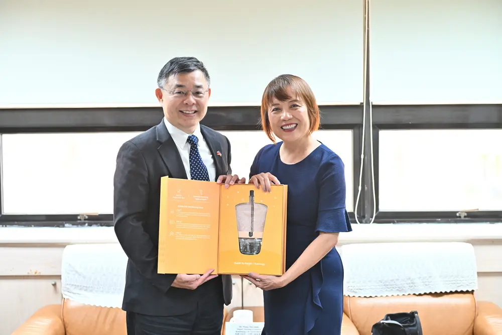
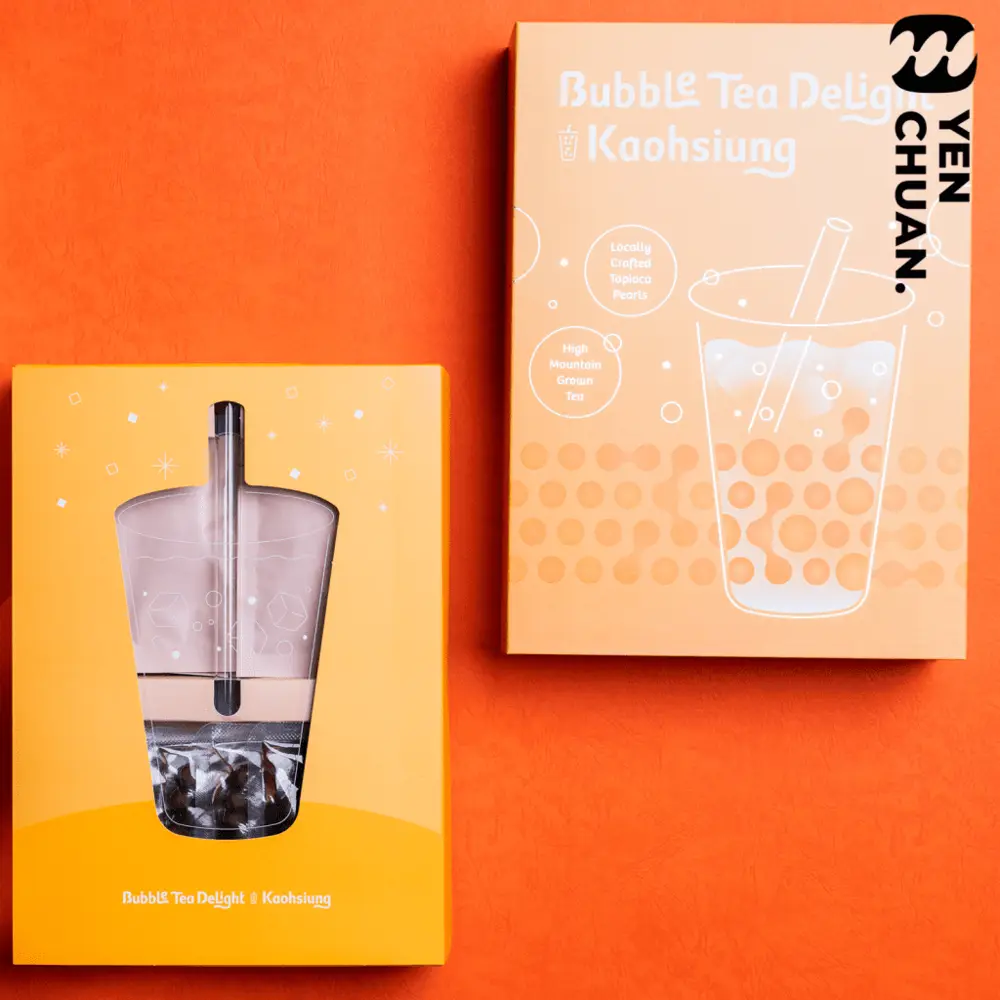
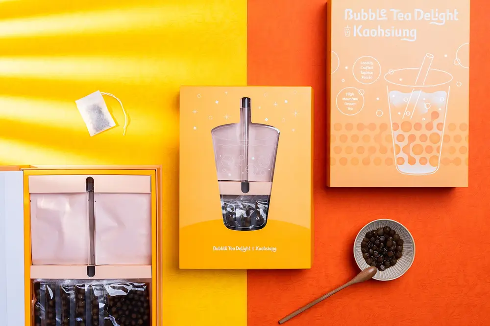
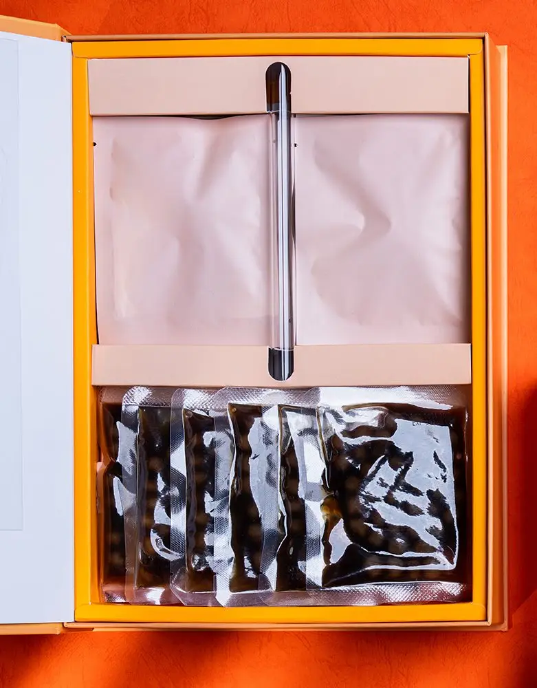

文章 / 飲品配方與資訊
We helped Kaohsiung make a bubble tea gift set!
這篇是英文原文，尚未完成繁體中文翻譯。中文選單與相關商品連結不會切回英文介面。

查看英文原文（尚未翻譯）
Yen Chuan is honoured to be chosen by the Kaohsiung City Government as a collab partner!
We’ve helped develop a beautiful and memorable gift set for foreign visitors and guests to the administration, featuring what helps put Taiwan on the map – bubble tea!

Officials approached us for a suitable gift for guests from the Greater Fort Lauderdale Sister Cities International, who visited Kaohsiung in March this year.
Since the visit was to celebrate the connection between Kaohsiung and Fort Lauderdale over the past two decades, they asked for a welcoming gift that also highlights Taiwanese culture. Naturally a bubble tea gift set is the perfect choice!

What’s in the box?

Each box contains the essentials of making a simple bubble tea:
- Instant tapioca pearls
- Tea bags (Black tea)
- Eco-friendly straws
Using the box set is simple:
First, heat the tapioca pearls via microwave, then add the brewed tea.
Add a splash of milk, and finally top up with ice cubes.
Voila – a quick cup of boba tea!
Bubble tea combos!
Milk tea’s not your thing? Luckily our box set makes mix-and matching easy!
Swap out the milk with various fruits for a colourful fruit tea, or experiment with different flavoured syrups.
Want to give cream tops a try? Froth up some milk for a quick substitute!
Even better, everything is packed neatly in an adorable yet stylish box set, with an inner design that resembles a cup of bubble tea. The result? The perfect gift set to represent Kaohsiung’s hospitality!
We’re happy and honoured to play a part in showing Kaohsiung’s best to the world, and thank the City Government for giving us this opportunity.
Now it’s your turn!
Interested in creating your own bubble tea box sets, or have other boba ideas? We’re here to help!
Drop us a message and we’re happy to discuss your needs.
We’d love to hear you out!